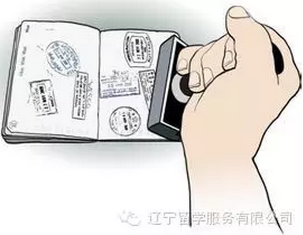

In recent years, more and more students have chosen to study in Australia. What changes occurred in Australia's study abroad policies in 2016? Did you know? Change 1: Exchange rate drops, study abroad expenses decrease. Due to the financial crisis, exchange rates of various currencies, including the US dollar and Australian dollar, have weakened, making the RMB increasingly "valuable." Change 2: Relaxing graduation work visas to encourage...
In recent years, more and more students have chosen to study in Australia. What changes occurred in Australia's study abroad policies in 2016? Did you know?
Change 1: Exchange rate drops, reducing study abroad expenses
Due to the financial crisis, the exchange rates of various currencies, including the US dollar and Australian dollar, weakened, making the renminbi increasingly "valuable."
Change 2: Relaxing graduation work visas
To encourage international students to work locally, the Post-Graduation Work Visa (PSW) removes professional and age restrictions, allowing international students to work in Australia after graduation. Among them, the work visa validity for bachelor's degree and taught master's graduates is 2 years, for research master's graduates 3 years, and for doctoral graduates up to 4 years.

Change 3: Lower security deposit and simplified application procedures
The new measures will reduce the financial requirement for applicants at Level 3 from 18 months to 12 months. However, due to this change, funding for Level 3 applicants must be provided by the applicant themselves or their close relatives. At the same time, under the new policy, regardless of nationality, visa type, or course to be studied, applicants holding a COE issued by an educational institution participating in simplified visa processing will be processed under a Risk Level 1 visa, a treatment previously only available to students from the US and UK.
Change 4: Opening up for early study abroad
A notable change in visa policy is the opening of middle school study abroad to China for the first time. Additionally, graduates from sixth grade can apply for an Australian Class 571 student visa to enter seventh grade, but immigration has set age limits: seventh grade must be under 15 years old, eighth grade under 16, and ninth grade under 17.
近年来，选择前往澳洲留学的学生越来越多。2016，澳洲留学政策发生了哪些变化？你知道吗？
变化一：汇率降低，留学开支减少
受金融危机影响，包括美元、澳元在内的多种货币汇率出现疲软，人民币因此越发“值钱”。
变化二：放宽毕业工作签证
为鼓励留学生在当地就业，毕业后工作签证(PSW)破除专业和年龄限制，允许留学生毕业后在澳工作。其中，学士学位、授课类硕士学位毕业生的工作签证有效期为2年，研究类硕士毕业生的为3年，博士毕业生的则长达4年。
变化三：降低保证金，简化申请程序
新措施将使三级审理级别学生申请人的资金要求从18个月减至12个月。但是，鉴于此项变化，三级审理级别申请人的资金须由学生签证申请人本人或其近亲提供。同时，在新政下，不论国籍、签证类型和将要学习的课程，凡持有参与简化签证审理程序的教育机构发出的COE的签证申请者将会被按照一类风险等级审理，以往只有美国、英国学生享受这个待遇。
变化四：开放低龄留学
签证政策调整比较引人注目的是，首次对中国开放初中留学。此外，小学六年级毕业即可申请澳洲571类学生签，入读七年级，但移民局对年龄做了限定，即7年级必须小于15周岁，8年级小于16周岁，9年级小于17周岁。
English edition. Select 中文原文 to compare with the original Chinese article.
This article is edited and published by Liaoning Overseas Study Service Co., Ltd. The content is for study abroad planning reference only. Unauthorized reproduction is prohibited.
Information on policies, regulations, admissions brochures, and program fees is timely. Please refer to the latest releases from official institutions and institutions in various countries; For detailed verification, please Contact an advisor。